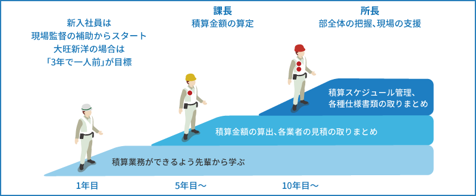

設計積算部門の特徴
設計積算部門は大きく分けて、土木設計積算と建築設計積算があります。工事受注前の見積積算から、受注後の実行予算の作成、設計、技術開発、産学官連携の共同研究まで、大旺新洋の工事・施工部門の活動を支援します。
設計・積算はもちろんですが、現場で解決しにくいトラブルを技術的な支援を行い解決に導きます。

積算業務を集約して原価管理の精度を高めることで、設計面でチャレンジングな提案ができるようになります。
施工会社として、見た目だけでなく施工コストや建築後のメンテナンスをしっかり考えた設計を心がけています。
見積や予算の精度を高め、他社との競合で勝てる見積、利益をきっちり確保できる予算を作ります。
より高度な工事にチャレンジできるように技術的な支援を行い、現場の課題を解決に導きます。
産学官の共同研究を行い、新しい発想で研究を進め、コンクリート構造物の予防保全や維持管理に活用していきます。
我々の立場では、中途半端な成果を出すわけにはいきません。現場としっかりコミュニケーションをとって、きっちり確証をもった成果を提示する責任があります。
設計積算の仕事
設計積算部では、「設計積算」という名前からは想像できないほど幅広い業務を行います。見積・設計はもちろん、仮設の計画、工法の検討…緻密な計画で大旺新洋の施工を支えます。
「設計積算」という名前からは想像できないほど多くの種類の業務を行う部署です。見積はもちろん、擁壁の設計や仮設の計画、アンケート調査なども。
見積の精度が受注を大きく左右します。工法や使用商品等、様々な検討を行って予算を緻密に計算します。
この工事に最も適した商品はどれなのか？実際に比べてみる研究業務も設計積算の仕事です。
産学連携での共同研究も行っています。研究内容は学会などで発表し、意見交換して知見を深めます。
現場で解決できない課題は、必要な資材を準備し実際に現場に行って確認します。効果的な現場支援を行います。
検討・提案した技術がうまくいって、お客様や社員の皆に喜ばれるのが喜び。大旺新洋の仕事を全力でバックアップするのが私たち設計積算部です。
設計積算の現場
設計積算部門では主に土木事業や建築事業で使用する見積、設計、技術提案などを行います。設計ソフトや地盤解析ソフトなど、技術系・積算系ソフトを使用する他、これらの講習会なども実施します。

主に見積関係を行うメンバーと、全国に出て対外的な業務を行うメンバーに分かれます。現場を経験していないと、今見積もっているものが何なのかわからない部分もあるので、土木事業などを経て設計積算に入ったメンバーが多いです。